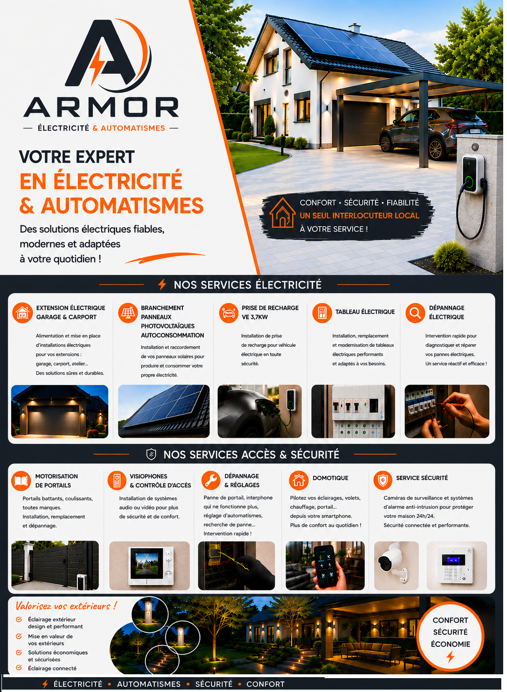

Particuliers
Des solutions fiables pour votre maison.
Électricité, automatismes, interphonie, sécurité, éclairage extérieur et recharge véhicule : un seul interlocuteur local pour vos projets.

Électricité, automatismes, interphonie, sécurité, éclairage extérieur et recharge véhicule : un seul interlocuteur local pour vos projets.
